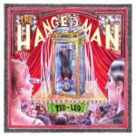

Ted Leo The Hanged Man
(self-released)
When The Hanged Man came out last week, I did whatever the digital equivalent is of tearing the cellophane off with my teeth and nearly cracking the jewel case trying to get the CD out and into my boombox (so, pushing “play” on Spotify really hard?). Finally, after seven years of radio silence, Ted Leo emerges with a Shake the Sheets for the Trump era! I could hardly anticipate the ire-in-a-box, specially after the relative disappointment of the last two albums. Surely if anything good could come from the absolute dumpster fire of a nation quickly crumbling around us, it’s the pop-punk outrage of Ted Fucking Leo. So. That means we have to clear this up straight out the gate: The Hanged Man has (almost) nothing to do with Trump, or even politics. But damn is it a good record.
What we’re treated to instead is an hour-long emotional masterpiece. Not perfect, but laid bare in its flaws as much as in its content. A first foray into production that explains a few odd choices perhaps, but hardly deal breakers. This is a much more personal record for Leo, and it's immediately apparent. Label collapse after label collapse, Ted Leo takes to his own studio, his own production, (mostly) without the Pharmacists, to turn himself inside out.
The album takes a new direction and evolution that feels neither forced nor stale like the last two efforts (nearly) did. Welcome new elements lend a musical cohesion above and beyond the more obvious poetic theme to a slightly disjointed record. The unintentional sonic cheek of Can’t Go Back, a delightful motown throwback, has a cheerfulness that belies the melancholy of “Moonlight shattered on this stretch of sea…”. Leo toys with his self-proclaimed “middle aged singer/songwriter” phase, quietly introing The Nazarene on the piano before the heartwrenching electric bassline takes over more than two minutes in. There's an eerie moodiness throughout that never trips over the line into maudlin territory.
Lunar imagery bookends The Hanged Man. First it's out of phase, and if you were hoping for an anti-Trump anthem, this is the only one you’ll get. While Moon Out of Phase has been compared to PJ Harvey, it doesn't sound like that to me --- yes, it’s reminiscent of '90s grunge, but the heavy bass and tight Beatles-like harmonies (another of the record's leitmotifs) overlaying the droning bassline with guttural vocals sound a lot like Placebo, the Stereophonics, or even Stone Temple Pilots. The closing track, Let’s Stay on the Moon, is the darkest and most haunting. Others have written more and better about the life events that inspired this record, so I won’t repeat them here. But Leo isn’t obfuscating anything at all: "We had a daughter, and she died/in 2129/And I'm barely alive." This mournful waltz (and I always insist that the waltz takes on the creepiest of time signatures), the Costello (or maybe even Lennon?)-esque vocals, the infinite refrain of “Watch the earth go down,” all come together to form a truly beautiful piece of music.
While there’s nothing outright startling, the entire record is peppered with slight genre hops and softened edges. Violins, saxophone (a questionable choice, but one that may grow on you the more you listen), gorgeous layered harmonies, and a gospel choir of backup vocals. All of this halos a well-paced album that, while lacking a bit in production quality (relax, everyone, this is a self-produced, kickstarted album from the king of DIY - you can handle it), is unmistakably Ted Leo, just one who’s been put through the wringer. The only song that really misses the mark is Little Smug Supper Club, one he wrote because he was “pissed off at a chef,” which feels like a tacked-on Gin Blossoms tune. No matter. It’s kind of fun.
And lest you think you’ve lost Ted Leo to new genres, rest entirely assured. All it takes is one spin of the the album’s first single (though you’ll want ten, on loop, dancing frenetically): You're Like Me. I can’t imagine anything more closely approaching the perfect platonic Ted Leo ideal. This is a tears-in-your-eyes, basement-show-under-your-feet, comfort of a song that you've heard a thousand times before, wrapped up in a shiny new package. It’s warbly, echo-chamber, stripped-down studio punk that could eventually oust Me and Mia as a crowd favorite at live shows.
In fact, somehow you’ll feel like you've heard this entire album before. It’s a record fully influenced but not derivative. It’s a hard dose of nostalgia; you sing along before you know the lyrics, but you can't put a finger on exactly where you've heard it before. It's not cookie-cutter Leo, it's not ripping anybody off, though the homages are many: it's Guided by Voices, it's the Beatles, it’s Motown. Where once a friend of mine lovingly referred to his music as "variations on The Boys Are Back In Town," I think it's safe to say we've surpassed the steady stream of palatable punk ballads and fallen into a truly new phase, trepidatiously experimental though it may be, of introspection rather than full-on exposés in song.
It’s selling Ted Leo short to expect that only political disillusion can push him to make great music. We don't lack that here, but nearly a year after the election, it's hard not to go in with a demanding fist, or at least thinking you know what to expect. Let's give him the space to make a truly personal record this time around. The Hanged Man is a return to form -- not with a whimper but with a bang. It’s just not the bang we expected. Some of the strongest records are written to cope with great personal tragedy (think back to Arcade Fire’s Funeral, Neko Case’s The Worse Things Get, the Harder I Fight…, or David Bowie’s Blackstar. And those are just in the last decade and a half!). Is it still punk if it comes from sadness and not rage? Does it have to be?
All that said about introspection, I think his tour will be where we find the incitement of will to power that his fans so sorely expected this album to ignite. "We developed a reputation for being on tour so much that maybe you didn’t have to come see us this time because we’ll be back," Leo said in his phenomenal Stereogum interview. I've lost count of how many times I've seen him, but he hasn't come through except as half of The Both in quite some time. And of course it's to promote this record, even though normally he didn't tour to promote new records, or not solely to. This is the first in seven years. But I predict The Hanged Man won't be at the forefront, with obvious exceptions -- You're Like Me, Let's Stay on the Moon, Can't Go Back, and Run to the City are begging for star treatment. I think Shake the Sheets will take center stage, maybe even in its entirety. He may well forego fan favorites like Timorous Me and Biomusicology and even The Ballad of the Sin Eater for the relatively unknown but extremely pertinent Loyal to My Sorrowful Country, one I don't recall hearing live since the Dubya era, and his raucous rendition of Stiff Little Fingers' Suspect Device that sometimes punctuates his encores to absolute uproar. The usual audience impatience with his famously long-winded interstitial banter will go by the wayside, though. I don’t know if that’s a prediction or a prayer, but this isn’t the time for the infamy of “FUCK TUNE, PLAY PUNK."
--
I’ve left the above untouched even though I’ve now seen the show. You can insert the Wayne’s World time warp hand motions yourself. You can also stop reading if all you wanted was a record review.
I could have left it there, but I’d honestly be remiss to leave out some mention of this phenomenal performance, in case you still have a chance to catch the tour. I just saw Ted Leo play the biggest venue I've ever seen him play sans Aimee Mann - “the hallowed halls of a former Spaghetti Warehouse” in Philadelphia where he kicked off the Hanged Man tour with far more Pharmacists than I expected to be accompanying him (keyboards, sax, a few extra guitars, oh my). In a cafe across the street, the barista heard me musing about what the audience might be like after seven years without an album. Yes, he tours constantly, but when was his last Philly gig? “I think he just has a lot of friends here,” the barista told me, reminding me of the West Philly basement shows so long ago that I hadn’t moved to the neighborhood yet. And it’s true, “half our band is from Philadelphia,” our prodigal son proudly announced to applause, and recollected his own stories about the things he could get away with in punk basements, but not so much in spaghetti warehouses.
Ted Leo took to the road after Trump got elected, to small red towns in big red states, “and every night he was mobbed by people who thanked him for coming through, who wanted to let them know what it was like to live in a world where you felt alone for not agreeing with everyone around you.” I’d always thought of him as a crusader, sure, but despite the band's moniker, it hadn’t occurred to me that he might actually be a medicine man. “This is an odd time to be exuberant,” he told us, smiling charmingly while tuning up between Where Have All the Rude Boys Gone and Can’t Go Back (I’d predicted this much correctly - nobody gave him any shit for his delightful inter-song banter this time around), “but that’s why we’re here.” He's never capitalized on his fame, even during the Hearts Of Oak/Shake The Sheets heyday, except for this: to turn himself into a traveling musical shaman.
If I’d given this any thought, I’d have rethought my predictions. Of course he played the old mainstays - those are comfort food. The time for rancor hasn’t exactly passed, but right now we need his soothing balms, the togetherness that only Parallel or Together, Biomusicology, Timorous Me, and Little Dawn - that perpetual last song of the last encore, with its eternal “it’s alright/it’s alright” outro refrain -- can provide. “Well, it’s not alright,” he said before bidding us farewell. “But it’s alright.”
17 September, 2017 - 23:46 — Gabbie